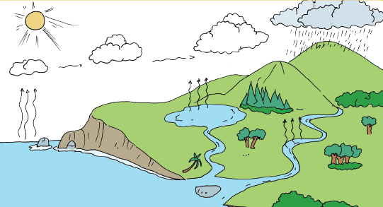

Ayo Membaca
Siklus Air
Air di laut, sungai, dan danau menguap akibat panas dari sinar matahari. Proses penguapan ini disebut evaporasi. Tumbuhan juga mengeluarkan uap air ke udara. Uap air dari permukaan bumi naik dan berkumpul di udara. Lama-kelamaan, udara tidak dapat lagi menampung uap air (jenuh). Proses ini disebut presipitasi (pengendapan). Ketika suhu udara turun, uap air akan berubah menjadi titik-titik air. Titik-titik air ini membentuk awan. Proses ini disebut kondensasi (pengembunan).
Titik-titik air di awan selanjutnya akan turun menjadi hujan. Air hujan akan turun di darat maupun di laut. Air hujan itu akan jatuh ke tanah atau perairan. Air hujan yang jatuh di tanah akan meresap menjadi air tanah. Selanjutnya, air tanah akan keluar melalui sumur. Air tanah juga akan merembes ke danau atau sungai.
Air hujan yang jatuh ke perairan, misalnya sungai atau danau, akan menambah jumlah air di tempat tersebut. Selanjutnya air sungai akan mengalir ke laut. Namun, sebagian air di sungai dapat menguap kembali. Air sungai yang menguap membentuk awan bersama dengan uap dari air laut dan tumbuhan. Proses siklus air pun terulang lagi. Dari proses siklus air itu dapat disimpulkan bahwa sebenarnya jumlah air di bumi secara keseluruhan cenderung tetap. Hanya wujud dan tempatnya yang berubah.